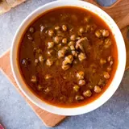
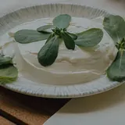
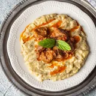
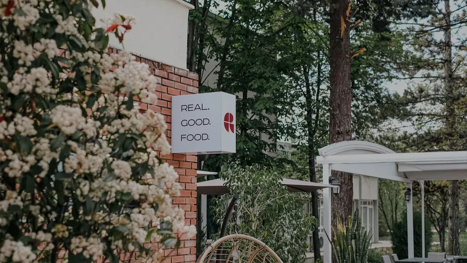
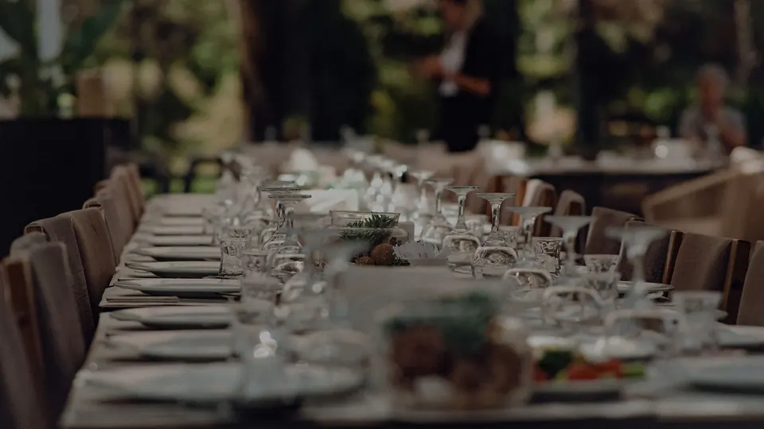
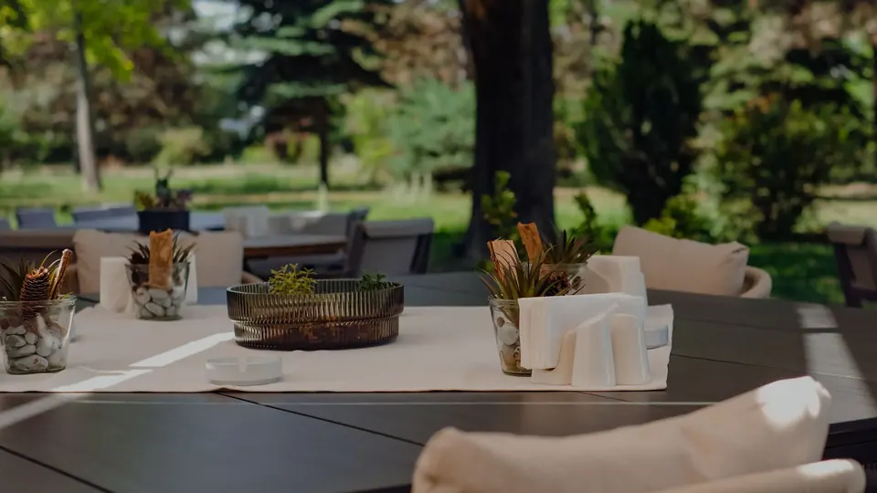
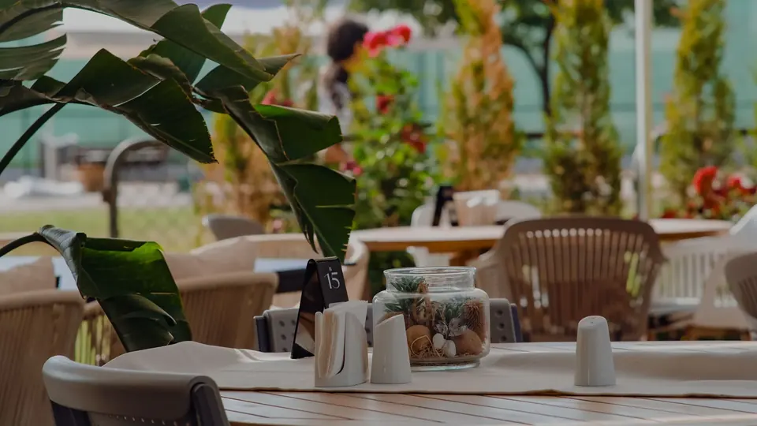

Otuz dört yıldır aynı özen ve samimiyetle
Misafirlerimizi kendi evimize gelmiş gibi ağırlıyor, iyi yemekleri ve güzel anları aynı masada buluşturuyoruz.
- Şimdi
- SaatlerPzt-Cum 09:00–22:00
Cmt ve Paz 09:00–21:00 - Adres75. Yıl OSB Mah. İsmail Kanatlı Bul. No:1/3, Odunpazarı/Eskişehir
- Telefon0 (222) 236 00 47
Yoğurtlu Semizotu160 TL

Çorbadan tatlıya
Menümüzdeki çorbalar, kahvaltılar, zeytinyağlılar, ızgaralar ve tatlılar Durmuş Usta'nın özel tarifleriyle hazırlanıyor.

Bamya Çorbası
120 TLDurmuş Usta'nın özel tarifi
Tavuk Çorbası
100 TLDüğün Çorbası
100 TLGünlük Çorbalar
90 TLEzogelin, mercimek, domates, mantar vb.
Kahvaltı Tabağı
250 TLBeyaz peynir, kaşar peyniri, köy peyniri, zeytin, reçel, bal, haşlanmış yumurta, domates, salatalık, çay
Serpme Kahvaltı
350 TLPeynir çeşitleri, bal, kaymak, zeytin, omlet, börek, çay vb.
Omlet Çeşitleri
150 TLSade, peynirli, sebzeli, mantarlı ya da karışık
Yeşil Salata
70 TLÇoban Salata
70 TLPeynirli Roka Salatası
80 TLKarışık Salata
100 TLYoğurt
70 TLCacık
70 TLPeynir Tabağı
220 TLPeynir Çeşitleri
70 TLBeyaz peynir, kaşar peyniri, köy peyniri, İzmir tulum, Erzincan tulum
Karışık Zeytinyağlı Tabağı
240 TLTaze Fasulye
160 TLBarbunya Pilaki
160 TLBrokoli
180 TLYaprak Sarma
200 TL
Yoğurtlu Semizotu
160 TLPatlıcan Biber Dolma
180 TLBiber Dolma
180 TLEnginar
200 TL
Kâğıtta Pastırma
180 TLMantar Izgara
80 TLMantı Mantar
100 TLTereyağında kavrulmuş, sarımsaklı ve yoğurtlu mantar
Sigara Böreği
80 TLPaçanga Böreği
110 TLPatates Tava
80 TL
Sebze ve Bakliyat Yemekleri
150 TLKıymalı ve sade sebzeler: kabak, taze fasulye, biber dolma, yaprak sarma, ıspanak, nohut, patlıcan
Tavuk Yemekleri
240 TLPiliç kavurma, piliç sote, mantar soslu piliç
Köfte Yemekleri
250 TLDalyan köfte, sebzeli köfte, ekşili köfte, İzmir köfte, kadınbudu köfte

Et Yemekleri
250–280 TLMacar gulaş, patlıcan kebabı, dana rosto, hünkârbeğendi, köylü biftek, çoban kavurma, et sote, dana antrikot
Pirinç Pilavı
100 TLBulgur Pilavı
100 TLMakarna Çeşitleri
160 TL
Izgara Köfte
280 TLPiliç Şiş
260 TLPiliç Izgara
260 TLKuzu Şiş
420 TLKuzu Pirzola
420 TLBiftek Izgara
420 TLKarışık Izgara
480 TLBonfile Izgara
500 TL
Kiremitte Çoban Kavurma
360 TLKaşarlı
Biftek Sarma
460 TLEt Şinitzel
500 TLMantar Soslu Biftek
460 TLMantar Soslu Bonfile
500 TLPiliç Şinitzel
320 TLPiliç Topkapı
320 TLPiliç Sarma
320 TLGüveç
400 TLEt Döner
300 TLYalnızca çarşamba günleri
Arnavut Ciğeri
300 TLKuzu Tandır
400 TL
Karışık Mevsim Meyveleri
160 TLKaymaklı Ekmek Kadayıfı
160 TLKaymaklı Kabak Tatlısı
160 TLAnanas Kestane Dondurma
170 TLKaymaklı Ayva Tatlısı
160 TLKazandibi
140 TLFırın Sütlaç
140 TLDondurma
140 TL
Kuver 15 TL'dir, servis ücreti alınmaz. İçerik ve fiyatlar değişebilir; fiyatlar odarestoran.com.tr'deki menüden alındı.
Tam menüyü görün1992'de Durmuş Usta'nın emeğiyle başlayan hikâye bugün aynı samimiyetle sürüyor.
Eskişehir'de misafirlerimizi 34 yıldır aynı özenle ağırlıyoruz.

Bahçede, salonda, sofrada
Odunpazarı'ndaki restoranımızdan kareler.




Eskişehir'de, Odunpazarı'nda
| Pazartesi | 09:00–22:00 |
|---|---|
| Salı | 09:00–22:00 |
| Çarşamba | 09:00–22:00 |
| Perşembe | 09:00–22:00 |
| Cuma | 09:00–22:00 |
| Cumartesi | 09:00–21:00 |
| Pazar | 09:00–21:00 |
- Rezervasyon için 0 (222) 236 00 47 numaralı telefondan bize ulaşabilirsiniz.